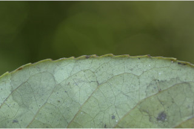
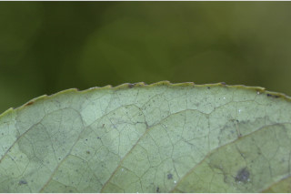
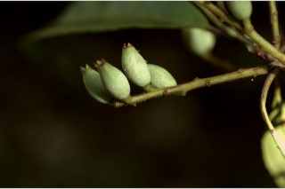
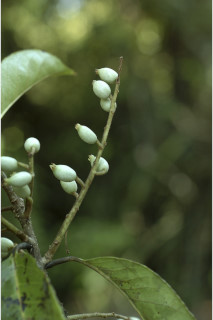
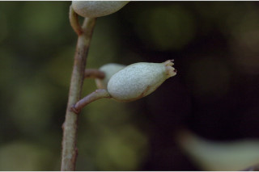
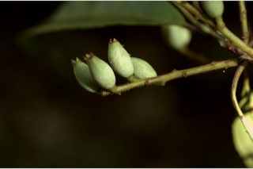
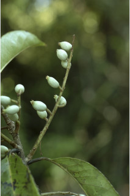
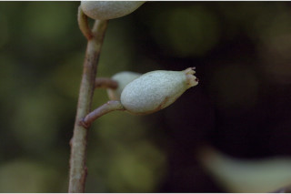

Bark greyish, lenticellate; blaze cream
ತೊಗಟೆ ಬೂದು ಬಣ್ಣದಲ್ಲಿದ್ದು,ವಾಯು ವಿನಿಮಯ ಬೆಂಡು ರಂಧ್ರಗಳ ಸಮೇತವಿರುತ್ತವೆ;ಕಚ್ಚು ಮಾಡಿದ ಜಾಗ ಕೆನೆ ಬಣ್ಣದಲ್ಲಿರುತ್ತದೆ.
Bark greyish, lenticellate; blaze cream
மரத்தின் பட்டை சாம்பல் நிறமானது, பட்டைத்துளைகள் (லெண்டிசெல்லேட்) உடையது; உள்பட்டை கீரிம் நிறமானது.
Young branchlets terete, glabrous, lenticellate.
ಕಿರುಕೊಂಬೆಗಳು ದುಂಡಾಗಿದ್ದು, ರೋಮರಹಿತವಾಗಿರುತ್ತವೆ, ವಾಯು ವಿನಿಮಯ ಬೆಂಡು ರಂಧ್ರಗಳ ಸಮೇತವಿರುತ್ತವೆ.
Young branchlets terete, glabrous, lenticellate.
சிறியநுனிக்கிளைகள் குறுக்குவெட்டுத் தோற்றத்தில் வளையமானது, உரோமங்களற்றது, பட்டைத்துளைகள் (லெண்டிசெல்லேட்) உடையது.
Leaves simple, alternate, spiral; petiole up to 1.5 cm long, planoconvex in cross section, glabrous; lamina 6.5-12.5 x 3-4.3 cm, oblanceolate to narrow elliptic, apex narrowly acuminate, base acute to attenuate, margin serrate and slightly recurved, glabrous; midrib canaliculate above; secondary_nerves 6-12 pairs; tertiary_nerves obliquely distantly percurrent.
ಎಲೆಗಳು ಸರಳವಾಗಿದ್ದು ಪರ್ಯಾಯ ಮತ್ತು ಸುತ್ತು ಜೋಡನಾ ವ್ಯವಸ್ಥೆಯಲ್ಲಿರುತ್ತವೆ; ತೊಟ್ಟುಗಳು 1.5 ಸೆಂ.ಮೀ.ವರೆಗಿನ ಉದ್ದವಿದ್ದು,ಅಡ್ಡ ಸೀಳಿದಾಗ ಸಪಾಟ ಪೀನ ಮಧ್ಯದ ಆಕಾರದಲ್ಲಿದ್ದು, ರೋಮರಹಿತವಾಗಿರುತ್ತವೆ; ಪತ್ರಗಳು 6.5 – 12.5 X3– 4 .3 ಸೆಂ.ಮೀ. ಗಾತ್ರ, ಬುಗುರಿ ಭರ್ಜಿಯಿಂದ ಸಂಕುಚಿತ ಅಂಡವೃತ್ತದವರೆಗಿನ ಆಕಾರ ಹೊಂದಿದ್ದು, ಸಂಕುಚಿತವಾಗಿ ಕ್ರಮೇಣ ಚೂಪಾಗುವ ತುದಿ, ಚೂಪಾದುದರಿಂದ ಒಳಬಾಗಿದ ಮಾದರಿವರೆಗಿನ ಬುಡ ,ಗರಗಸ ದಂತಿತವಾದ ಮತ್ತು ಸ್ವಲ್ಪ ಮಟ್ಟಿಗೆ ಹಿಂಸುರುಳಿಗೊಂಡ ಅಂಚು ಹೊಂದಿದ್ದು ರೋಮರಹಿತವಾಗಿರುತ್ತವೆ;ಮಧ್ಯನಾಳ ಪತ್ರದ ಮೇಲ್ಭಾಗದಲ್ಲಿ ಕಾಲುವೆಗೆರೆ ಸಮೇತವಿರುತ್ತದೆ;ಎರಡನೇ ದರ್ಜೆಯ ನಾಳಗಳು 6-12 ಜೋಡಿಗಳಿರುತ್ತವೆ; ಮೂರನೇ ದರ್ಜೆಯ ನಾಳಗಳು ಓರೆಯಾಗಿದ್ದು,ಅಂತರ ಹೊಂದಿದ್ದು ಎಲೆಯ ದಿಂಡಿಗೆ ಅಡ್ಡವಾಗಿ ಕೂಡುವ ಮಾದರಿಯಲ್ಲಿರುತ್ತವೆ.
Leaves simple, alternate, spiral; petiole up to 1.5 cm long, planoconvex in cross section, glabrous; lamina 6.5-12.5 x 3-4.3 cm, oblanceolate to narrow elliptic, apex narrowly acuminate, base acute to attenuate, margin serrate and slightly recurved, glabrous; midrib canaliculate above; secondary_nerves 6-12 pairs; tertiary_nerves obliquely distantly percurrent.
இலைகள் தனித்தவை, மாற்றுஅடுக்கமானவை, சுழல் போன்று அமைந்தவை; இலைக்காம்பு 1.5 செ.மீ. நீளமானது, குறுக்குவெட்டுத் தோற்றத்தில் பிளேனோகான்வக்ஸ், உரோமங்களற்றது; இலை அலகு 6.5-12.5 x 3-4.3 செ.மீ., தலைகீழ் ஈட்டி வடிவானது முதல் குறுகிய நீள்வட்ட வடிவானது, அலகின் நுனி சிறிது அதிக்கூரியது, அலகின் தளம் கூரியது முதல் அட்டனுவேட், அலகின் விளிம்பு ரம்ப பற்களுடையது மற்றும் சிறிது பின்புறம் வளைந்து காணப்படும், உரோமங்களற்றது; மையநரம்பு மேற்புறத்தில் அலகின் பரப்பைவிட பள்ளமானது; இரண்டாம் நிலை நரம்புகள் 6-12 ஜோடிகள்; மூன்றாம் நிலை நரம்புகள் தளம் நோக்கிய இணையான அகன்ற பெர்க்கரண்ட்.
Inflorescence axillary racemes, up to 14 cm long, tomentose.
ಪುಷ್ಪಮಂಜರಿ ಅಕ್ಷಾಕಂಕುಳಿನಲ್ಲಿನ ಮಧ್ಯಾಭಿಸರ ಮಾದರಿಯವುಗಳಾಗಿದ್ದು, ಅಂದಾಜು 14 ಸೆಂ.ಮೀ. ಉದ್ದವಿರುತ್ತವೆ,ದಟ್ಟ ಮೃದುತುಪ್ಪಳದಿಂದ ಕೂಡಿರುತ್ತವೆ.
Inflorescence axillary racemes, up to 14 cm long, tomentose.
மஞ்சரி இலைக்கோணங்களில் காணப்படுபவை, ரெசீம் வகை, 14 செ.மீ. நீளமானது, உரோமங்களுடையது.
Drupe, ellipsoid or oblong, ca. 1.5 cm long; seeds 1-2.
ಡ್ರೂಪ್ಗಳು ಅಂಡವೃತ್ತ ಅಥವಾ ಚತುರಸ್ರಾಕಾರದಲ್ಲಿದ್ದಿ ಅಂದಾಜು1.5 ಸೆಂ.ಮೀ. ಉದ್ದವಿರುತ್ತವೆ;ಬೀಜಗಳ ಸಂಖ್ಯೆ 1 ರಿಂದ 2.
Drupe, ellipsoid or oblong, ca. 1.5 cm long; seeds 1-2.
உள்ளோட்டுத்தசைகனி (ட்ரூப்), நீள்வட்ட அல்லது நீள்சதுர வடிவானது, 1.5 செ.மீ. நீளமானது; விதைகள் 1-2.
 

 




